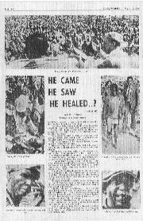

A chaotic meeting in Rhodesia10.23pm. We are all feeling miserable tonight at the failure of the meeting. Only about 5,000 turned up, the venue (which I had not seen) was wrong, the arrangements were totally inadequate, the platform was so crowded as to make it almost impossible to minister, and after praying en masse and having them come forward to testify, so many sick and idiot children were dumped at our feet, that we ended up in chaos. Freda and I got to the meeting at 2.45pm. People had been arriving since 7.30am from all over the country. I got up to preach almost immediately, led the people in the sinner’s prayer, then prayed for the deaf. Several immediately pushed forward to testify. Then I prayed for all the sick, and some blind cases were healed. But there was so much noise and excitement, and so many people on the platform, that the congregation thought I had laid hands on the people. Earlier, a Methodist minister had taken upon himself to admit people inside the barrier which had been erected in front of the platform, and a child had been injured in the mouth by tape-recording equipment falling from a collapsing table. With so many people crushing the platform, my lapel microphone kept being torn from me, and the equipment was in danger of being destroyed, I had to call a halt to the proceedings. It was sheer chaos, just like we have seen so many times before. It was not the Lord who failed us but our lack of organisation. Our first disappointment of the day was after breakfast. We were expecting young Andre du Toit at 9.00am. He was to accompany Brian [Bosomworth] to St. Mary’s to help with all the arrangements and gain valuable experience. But his grandfather would not allow him to come as they did not think it would be safe. So Brian went off by himself. Freda and I went to the park where we spent a delightful hour or two by the stream and pond, feeding the fishes with bits of wafer left over from the Communion, and watching the birds, and listening to a chorus of frogs. Eventually we returned to the hotel to find Janet’s letter of last Monday, with the disturbing news that Freda’s mother, after returning home, had had to go into a nursing home at Redditch. Freda and I both woke with the headaches we had gone to bed with last night. Mine went during the morning, but Freda’s didn’t, probably because she was tense thinking of her responsibilities this afternoon, especially in taking photographs. I am greatly disappointed at today’s effort. It was a disgrace. We had such high expectations of the meeting. Our taxi driver immediately recognised us when he came to pick us up, and said he had read about the “doctor” coming to St. Mary’s. I told him the doctor was Jesus. So many, many people will have been disappointed, and the mistakes could have been avoided if only I had been on the spot to supervise things. The platform had very foolishly been erected a yard away from the wall of the football ground, thus allowing people to get around the back. People were perched in very precarious positions on the wall. The platform itself was hopelessly inadequate, measuring only 15ft × 6½ft × 2ft. The afternoon was really a nightmare. Lord, let us do better tomorrow. |
A blessed meeting10.29pm. We have just come to bed and are watching a play on TV, with Richard Vernon, Gwen Watford, Nicola Pagett and Alexandra Bastedo. I forget the title. We had seen it on ITV. Earlier we saw a very funny Rising Damp. We had a fine meeting at St. Mary’s this afternoon. More than 10,000 were present (Brian thought 15,000), and Comrade [my interpreter] estimated that hundreds were healed in the mass prayer. I prayed first for the deaf, and so many came forward to testify, that it was impossible to let them all speak. Brian reckoned that there were 30 deaf cases healed. I saw two men discard their crutches and walk unaided for the first time in their life. A little child received healing from a useless arm. It was a model service. We had perfect order throughout, and did everything right that we did wrong yesterday. It was the 22nd anniversary of my call to the healing ministry. Thank you, Jesus. |

A full-page report of the meeting appeared in the Zimbabwe Times on August 15th. (Rhodesia became Zimbabwe on 1 September 1979.) |
SATURDAY 7th OCTOBER 1978
...
|